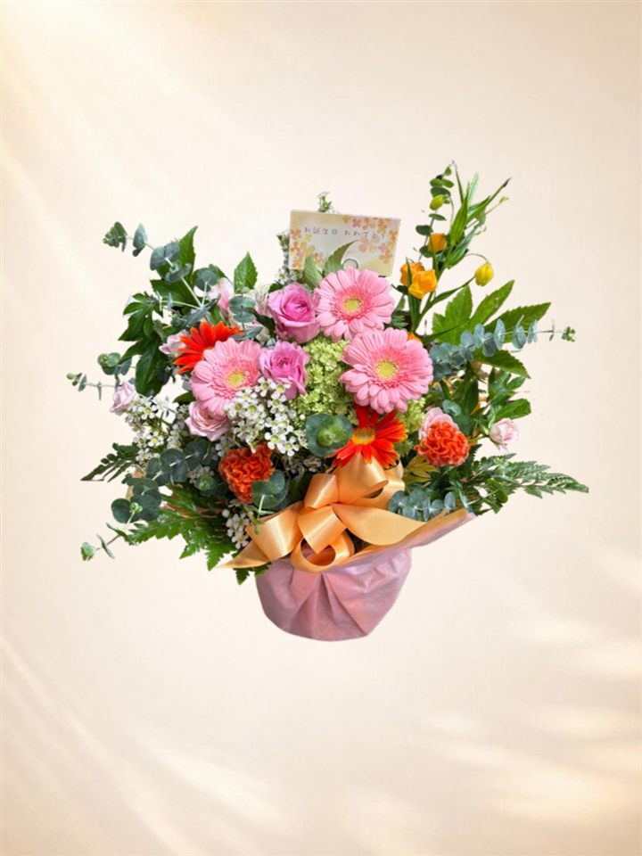
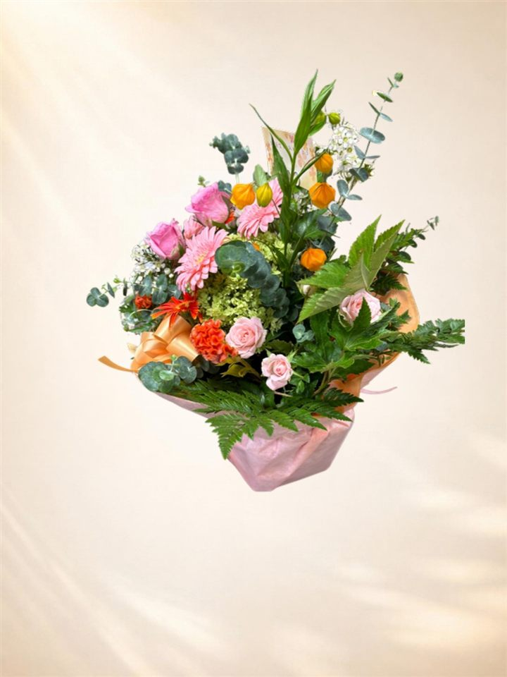

いつも、生き生きとしたお花を
お正月のあとも、季節のお花でお客様をお迎えしませんか。お水の世話や片付けは、すべてお店におまかせください。
🔄
届けて、入れ替えて、持ち帰ります新しいお花を飾り、前のお花はお店で引き取ります。
🏺
器はお店から貸し出し器を買っていただく必要はありません。
🌷
季節ごとにお花が変わる春は桜やチューリップ、夏は涼しげなグリーンなど、来るたびに季節を感じられます。
🧾
請求書でのお支払いOK法人様は請求書払いができます。
プランと値段
1回あたりの値段です（税別）。置き場所やご予算に合わせてお作りします。
受付カウンター向けカウンター・応接室・レジ横に
5,000円〜
おすすめロビー・エントランス向け入口・ロビーのテーブルに
10,000円〜
大型広いエントランス・床置きに
20,000円〜
入れ替えの回数
いちばんきれいな状態を保てる「毎週」がおすすめです。ご予算に合わせて選べます。
毎週いつも元気なお花
2週に1回長持ちする花材で
月に1回長持ちする花材で
2週に1回・月に1回のときは、長持ちするお花を中心にお作りします。
はじめるまで
- お電話・FAXでご相談置き場所・大きさ・ご予算・回数をお聞きします。
- 曜日を決めるお届けする曜日と時間を決めます。
- お届け開始いつからでも始められます。お休みや回数の変更もご相談ください。
これまでの作品から


写真はイメージです。季節やお花の入荷によって、内容は毎回変わります。
配達について
🚚
西区は配達無料そのほかの札幌市内は1回500円（税込）です。定山渓をのぞきます。
お店のこと
| 店名 | フィオーレ・サンマルコ |
|---|---|
| 住所 | 〒063-0033 札幌市西区西野3条4丁目1-17 地図を開く |
| 営業時間 | 9:15〜18:00（不定休） |
| 電話 | 011-662-8125 |
| FAX | 011-213-8768 |